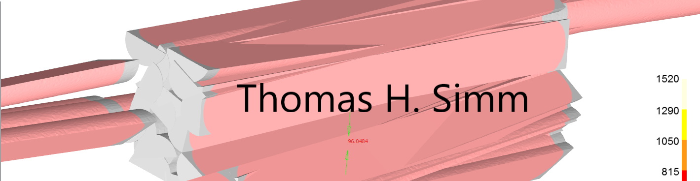
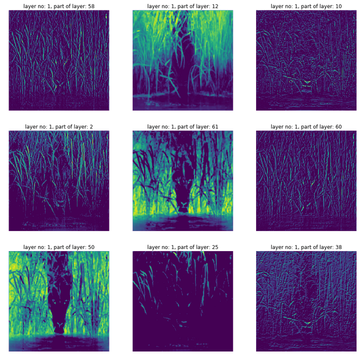
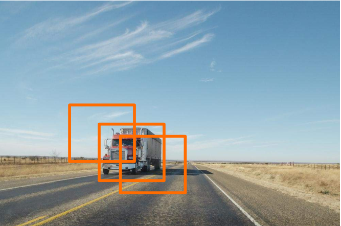
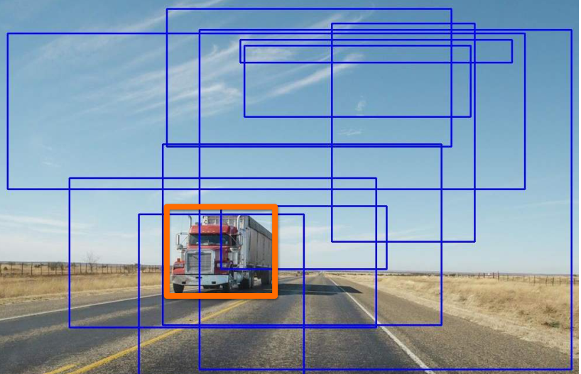
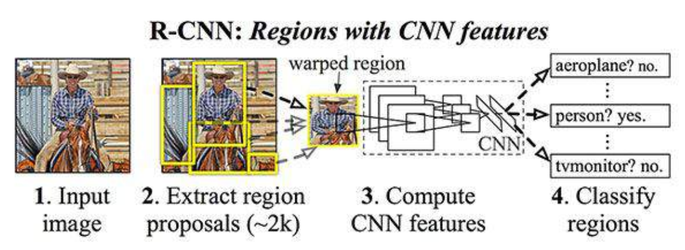
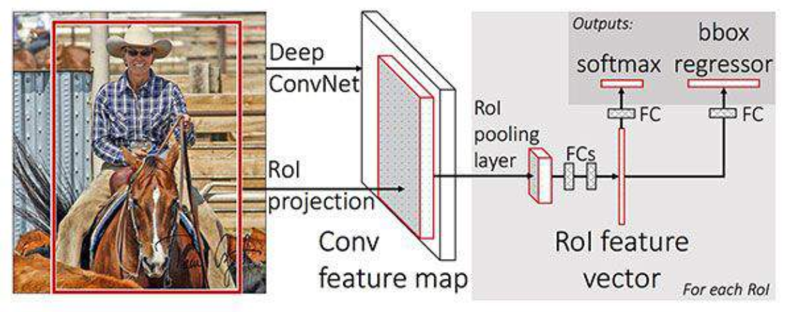
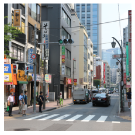

model = tf.keras.models.Sequential([
tf.keras.layers.Convolution2D( 64,(3,3),activation='relu',input_shape=(28,28,1) ),
tf.keras.layers.MaxPool2D(2,2),
tf.keras.layers.Flatten(),
tf.keras.layers.Dense(256//2,activation='relu'),
tf.keras.layers.Dense(1,activation='sigmoid') ])
TensorFlow Images cheat sheet
Some tips for tensorflow and keras in Image Processing
- toc: true
- badges: true
- comments: true
- categories: [tensorflow, Images]
- image: ghtop_images/header2.png
Basic Implementation
Data augmentation
https://www.tensorflow.org/api_docs/python/tf/keras/preprocessing/image/ImageDataGenerator
Before the data is presented to the model, data augmentation can be performed on the data.
The advantage of this is that it can effecitively create new data for the model and hopefully reduce overfitting. The most common use of this is for images but methods also exist for other data types. For example, for text data we could pass the data through a translator and back again.
from tensorflow.keras.preprocessing.image import ImageDataGenerator
train_datagen = ImageDataGenerator(rescale=1./255.,
rotation_range=40,
width_shift_range=5,
height_shift_range=5,
shear_range=5,
zoom_range=5,
horizontal_flip=True,
fill_mode="nearest")Extracting information from layers of a model- Images
- Give the image to the model
- Each part is a different layer, and within it the different neurons
- Alternatively the same can be done by setting the output of the model to be the mid-level layer
model_extract = Model(inputs = model.input,outputs=model.get_layer('block4_conv4').output)
# Visualise the input channels
img_path = 'data/cool_cat.jpg'
x = image.img_to_array(img)
f1 = model(x)
def plot_layers(f1,layer_no=1):
import matplotlib.pyplot as plt
print(f1[layer_no].shape)
plt.figure(figsize=(15,15))
random_9 = np.random.randint(0,f1[layer_no].shape[-1],30)
nnn=0
for nn in range(0,30):
n=random_9[nn]
plt.subplot(3,3,nnn+1)
try:
plt.imshow( f1[layer_no][0,:,:,n])
plt.axis('off')
plt.title(f"layer no: {layer_no}, part of layer: {n}")
nnn=nnn+1
except:
print(f'failed {n}')
continue
if nnn==9:
print('breaking')
break
plot_layers(f1,layer_no=1)
Load images
Load from directory
If files are in folders can use flow_from_directory the files would need to be separated by class and training/validation as follows for a classification
e.g. files in folders like this:
/tmp/cats-v-dogs/validation/cats/tmp/cats-v-dogs/validation/dogs/tmp/cats-v-dogs/training/cats- `/tmp/cats-v-dogs/training/dogs
train_datagen = ImageDataGenerator()
train_generator = train_datagen.flow_from_directory(directory=TRAINING_DIR,
batch_size=256,
class_mode='binary',
target_size=(150, 150))
# Test your generators
train_generator, validation_generator = train_val_generators(TRAINING_DIR, VALIDATION_DIR)
# Put in the fit
model.fit(train_generator,
epochs=15,
verbose=1,
validation_data=validation_generator)Classification
Some terms:
- Multi-class Classification (or binary classification a subset of this)
- e.g. Find whether image is 1, 2, 3, 4… in MNIST
- Multi-label Classification
- Can find multiple objects in the same image
- e.g. image has cats AND dogs in it
- Object Localization
- Where is the object in an image
- Object detection
- Combines object localization and multi-label classification
- e.g. here in the image is the cat, here is the dog, here is the person
- has confidence scores
- has bounding boxes
- Algorithms include
- R-CNN
- Faster-RCNN
- YOLO
- SSD
- Image segmentation
- instead of bounding box, image segmentation figures out the pixels belonging to an object
- sementatic segmentation - groups all instances of same type together
- i.e. group of people classed as one object
- models include Fully Convoluted Neural Networks, U-Net, DeepLAb
- instance segmentation- groups by instances of the class
- i.e. each person in group is separate
- Mask R-CNN
- iou- intersection over union
- metric used to define how good object localization is
- intersection = area where actual and predicted bounding boxes overlap- i.e. their intersection
- union = total area covered by both boxes
- metric iou = intersection / union
- so if iou = 0 no overlap
- if iou ==1 complete overlap
References:
Fully Convolutional Networks for Semantic Segmentation (Long, Shelhamer & Darrell, 2014)
U-Net: Convolutional Networks for Biomedical Image Segmentation (Ronneberger, Fischer & Brox, 2015)
DeepLab: Semantic Image Segmentation with Deep Convolutional Nets, Atrous Convolution, and Fully Connected CRFs (Chen, Papandreou, Kokkinos, Murphy, and Yuille, 2016)
Mask R-CNN (He, Gkioxari, Dollár & Girshick, 2017)
Transfer Learning
Models that can be used found here https://www.tensorflow.org/api_docs/python/tf/keras/applications
Keras Applications are premade architectures with pre-trained weights.
- Use pre-existing models trained on similar data
- Task being applied are called downstream task
- Use model and layers and weights of pre-trained model
- Will be trained on many examples and have learned various features
Why? - Reduces computation - Improve model performance
Methods:
Take the pre-trained model and add on additional Dense Layers that will be trained at the end - The pre-trained model’s final layers are removed as they may be overspecialized for tasks not relevent to our use - all the pre-trained model’s layers used are freezed and not involved in training
Alternatively, we could allow the pre-trained layers to be trained whilst using the pre-trained weights.
An example of transfer learning on images with Inception
- Load the model pre-trained weights
- Import the model architecture
- Give the model the input shape for data
pre_trained_model = InceptionV3(input_shape = (150, 150, 3), include_top = False, weights = None)
Better to keep the same shape as the model uses and change your data to match it than to change input_shape to match your data.
include_top=False removes top most layer of the model- the output layer
weights=None just uses the model architecture- note the weights are loaded on a later line
- Load the weights into the model
- Freeze all the layers
- Pick out the front part of the model, as the layers to the end are more specialized
- Add extra layers to the model that can be fitted to
Note this uses the functional API
- Match the image size of our images to that needed by the model
Our model expects 150X150X3 but our data is 50X50. So we need to multiply our image size by 3. This is done by the UpSampling2D layer
model = tf.keras.layers.UpSampling2D(size=(3,3))(model)
or use resize if image is bigger tf.image.resize(image, (150, 150,))
# 1- Download the inception v3 weights
!wget --no-check-certificate \
https://storage.googleapis.com/mledu-datasets/inception_v3_weights_tf_dim_ordering_tf_kernels_notop.h5 \
-O /tmp/inception_v3_weights_tf_dim_ordering_tf_kernels_notop.h5
# 2- Import the inception model
from tensorflow.keras.applications.inception_v3 import InceptionV3
# Create an instance of the inception model from the local pre-trained weights
local_weights_file = '/tmp/inception_v3_weights_tf_dim_ordering_tf_kernels_notop.h5'
# 3- create the model and load in the weights
pre_trained_model = InceptionV3(input_shape = (150, 150, 3),
include_top = False,
weights = None)
# 4- load weights into the model
pre_trained_model.load_weights(local_weights_file)
# 5- Make all the layers in the pre-trained model non-trainable
for layers in pre_trained_model.layers:
layers.trainable = False
# 6- Pick out part of the model
last_desired_layer = pre_trained_model.get_layer('mixed7')
last_output = last_desired_layer.output
# 7- Add extra layers to the model
# Flatten the output layer to 1 dimension
x = layers.Flatten()(last_output)
# Add a fully connected layer with 1024 hidden units and ReLU activation
x = layers.Dense(1024,activation='relu')(x)
# Add a dropout rate of 0.2
x = layers.Dropout(0.2)(x)
# Add a final sigmoid layer for classification
x = layers.Dense(1,activation='sigmoid')(x)
# 8. Increase input image sizes to match that needed by model using
# a layer before the existing model starts
model = tf.keras.layers.UpSampling2D(size=(3,3))(model)
# Create the complete model by using the Model class
model = Model(inputs=pre_trained_model.input, outputs=x)
# Compile the model
model.compile(optimizer = RMSprop(learning_rate=0.0001),
loss = 'binary_crossentropy',
metrics = ['accuracy'])Object Detection
Two stages: 1. Region proposal - e.g. sliding window 2. Object detection and classification - identifies and classifies objects in that region
- Sliding window- a window smaller than the image scans accross the image. Detection is done on each window.
- image window size and image size can be scaled
- multiple boxes could select the same image
- pick one with highest iou
- called non-maximum suppression (nms)

- Selective search
- The algorithm makes guesses about what might contain the objects of interest.
- Groups where object is detected are merged to obtain a bounding boxto define the group
- A slow approach, but in accuracy can be good.

R-CNN
R-CNN (R=region) a region based CNN to implement selective search with neural networks.
- Takes input images
- Extract regions using selective search method (~2k)
- Extract features using CNN from each region
- warped to match AlexNet inputs
- Classify with support vector machine (SVM) instead of dense layers
- Plus regression to get bounding box of images
- Very slow & computationally expensive

Fast R-CNN
The aim was to improve issues above with RCNN.
- Entire image is fed into the ConvNet
- no selective search- computationally expensive
- this Convnet is trained on finding features
- produces a feature map of the image
- Each feature map can then be fed into fully connected dense layer
- get feature vector of image
- Feature vector fed into layers to do regression and classification

Faster R-CNN
- entire image into Convnet
- sliding window to find areas of interest
- something called a Region Proposed Network is used with data to find and create anchor boxes on image
- The cropped and passed to Dense layers for classification and regression.
Object detection in TensorFlow
https://www.tensorflow.org/hub
TensorFlow Hub is a repository of trained machine learning models ready for fine-tuning and deployable anywhere. Reuse trained models like BERT and Faster R-CNN with just a few lines of code.
Copy url from hub page https://tfhub.dev/google/faster_rcnn/openimages_v4/inception_resnet_v2/1 page for faster rcnn. And copy url is “https://tfhub.dev/google/faster_rcnn/openimages_v4/inception_resnet_v2/1”
import tensorflow as tf
import tensorflow-hub as hub
module_handle = "https://tfhub.dev/google/faster_rcnn/openimages_v4/inception_resnet_v2/1"
detector = hub.load(module_handle).signatures['default']
An example can be found here https://www.tensorflow.org/hub/tutorials/object_detection
Object Detection API
https://colab.research.google.com/github/tensorflow/hub/blob/master/examples/colab/tf2_object_detection.ipynb
https://github.com/tensorflow/models/blob/master/research/object_detection/g3doc/tf2.md https://github.com/tensorflow/models/tree/master/research/object_detection https://www.tensorflow.org/guide/checkpoint
Useful bits of tf code
Add batch dimension
Images are expected to be of the form [sample_no, image_X, image_Y, RGB] but if single image the first dimension will be missing
img = load_img(downloaded_image_path) print(img.shape)
(2592, 3872, 3)
img_new = tf.image.convert_image_dtype(img, tf.float32)[tf.newaxis, ...] print( img_new.shape)
(1, 2592, 3872, 3)
Convert image to a tensor
img = tf.image.decode_jpeg(img, channels=3)
Image tools
from PIL import Image
from PIL import ImageOps
from six.moves.urllib.request import urlopen
from six import BytesIO
url_img = 'https://upload.wikimedia.org/wikipedia/commons/4/4f/PEOPLE_WAITING_TO_CROSS_A_STREET_IN_TOKYO_2017.jpg'
# reads the image fetched from the UR
image_data = urlopen(url_img).read()
# puts the image data in memory buffer
image_data = BytesIO(image_data)
# opens the image
pil_image = Image.open(image_data)
# resizes the image. will crop if aspect ratio is different.
pil_image = ImageOps.fit(pil_image, (256, 256), Image.ANTIALIAS)
# converts to the RGB colorspace
pil_image_rgb = pil_image.convert("RGB")import matplotlib.pyplot as plt
plt.imshow(pil_image_rgb)
plt.axis(False);